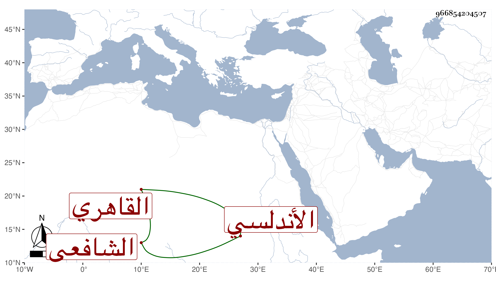

0902Sakhawi.DawLamic.ITO20230111-ara1.EIS1600.966854204507
Biography ID: 966854204507
741
خليل بن أبي بكر بن علي بن عبد الحميد غرس الدين الأندلسي الأصل القاهري الشافعي والد الشمس محمد وأخو عمر الآتيين ويعرف كسلفه بابن المغربل . نشأ فحفظ القرآن وقطعة من التنبيه ثم اشتغل بالقيام بعياله وتزوج صالحة ابنة النور علي بن السراج بن الملقن وأنجبها ولده المشار إليه وداوم التلاوة والعبادة حتى مات في ثامن عشر رمضان سنة ثمان وثلاثين عن أربع وستين سنة .
